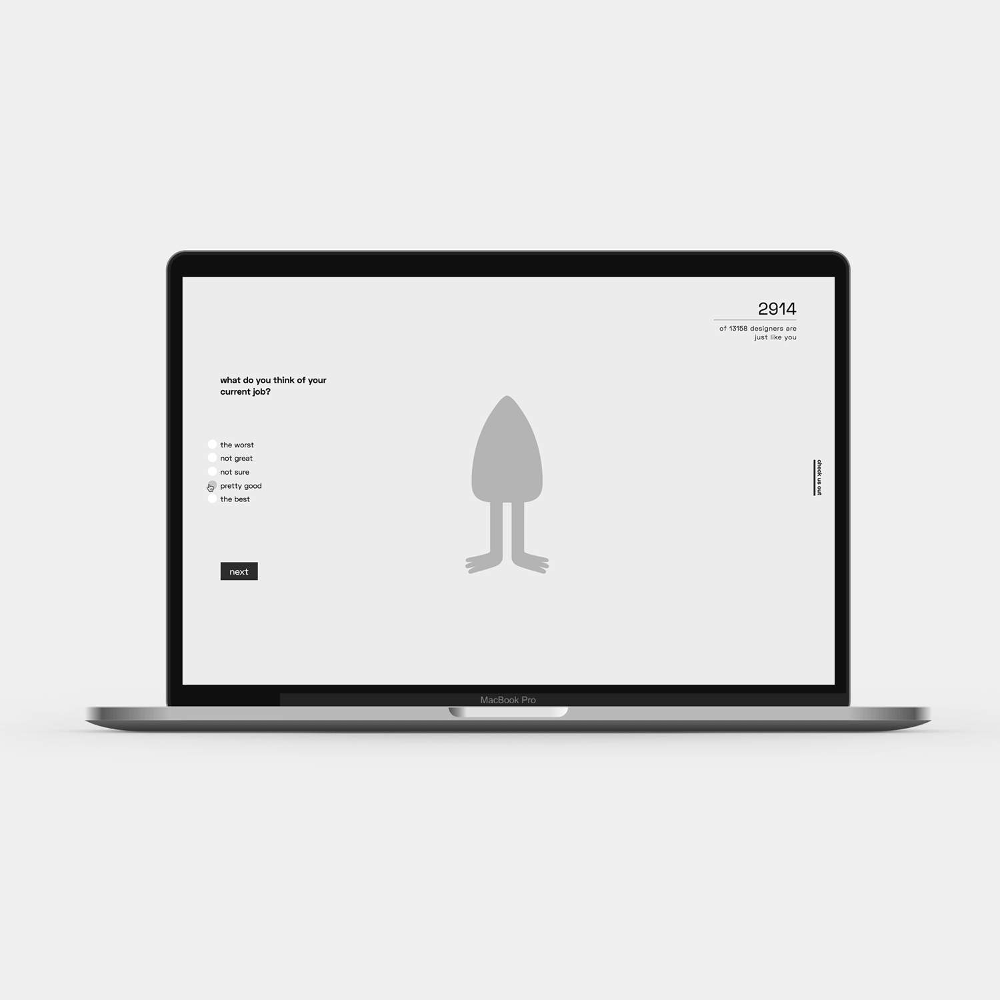
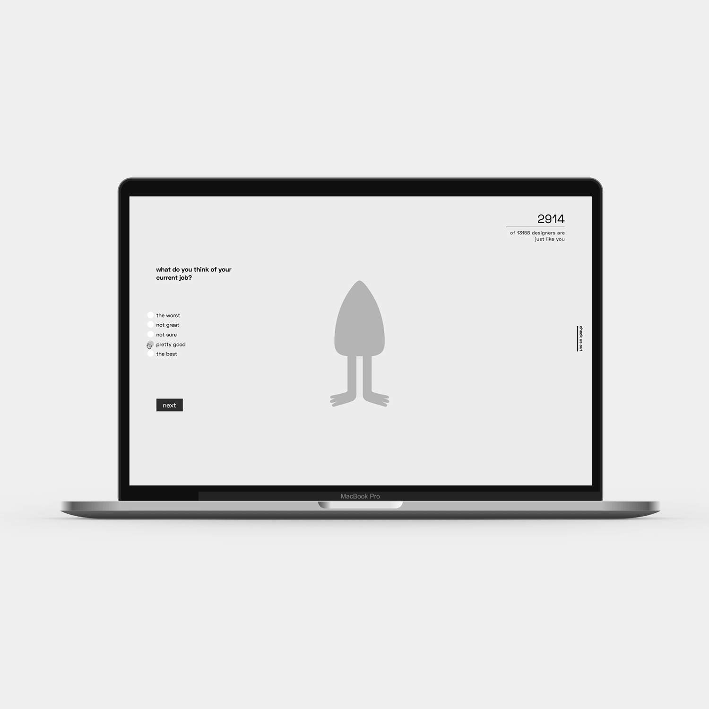
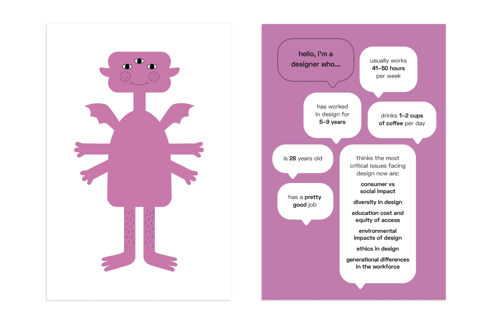
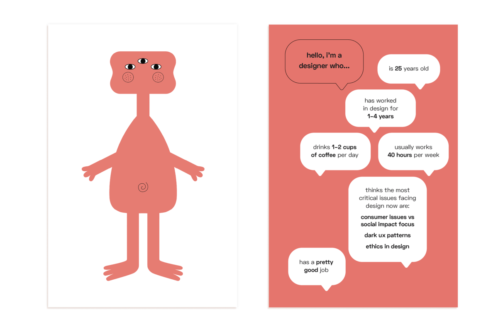
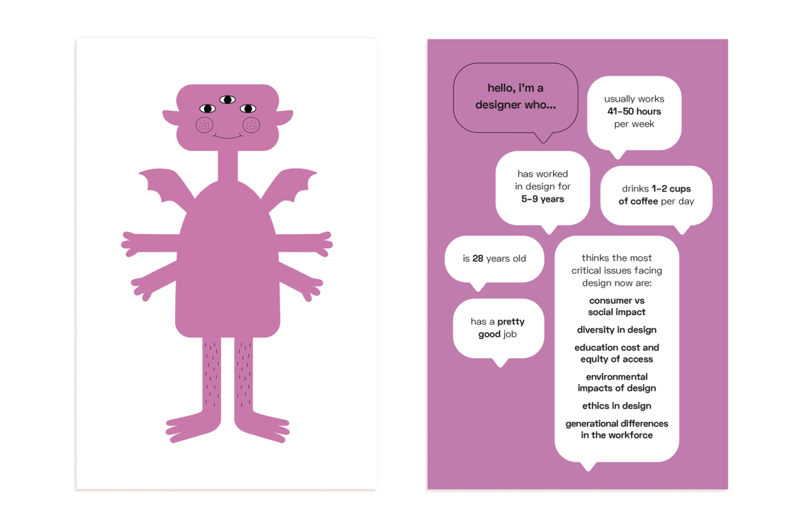
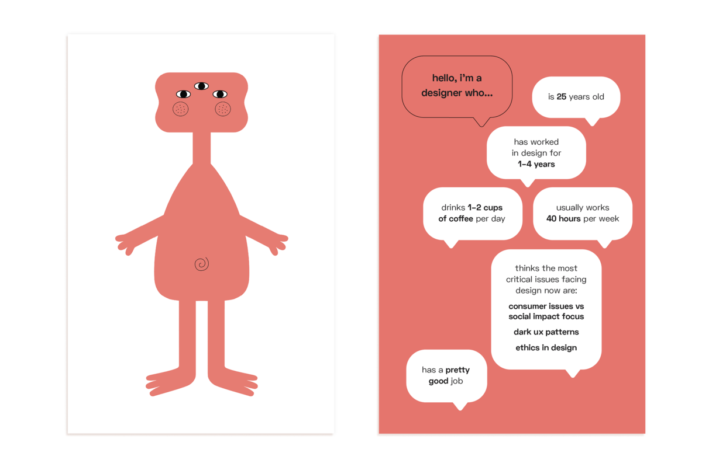

AIGA Monsters
SPRING 2018
Communications Design Studio III
TEAM:
Katie Chen, Maddy Cha, Allissa Chan, Rachel Glasser
BRIEF:
Open ended prompt to visualize the data provided in the 13,514 answers of the 2017 AIGA design census.
MY ROLE:
I used python to decipher the .csv from AIGA and gather the necessary data to compare the user’s choices with the responses in the survey. I also worked with my teammate Maddy to code the interactive website using HTML/CSS/JQuery. Check out our live website!
OUR APPROACH:
We wanted the data to be more “human” and more realistic, to tell the story of each designer who responded to the design census. We depicted the data by associating certain responses with certain visual forms (ie. job satisfaction to head shape), to generate monsters to show a designer’s series of responses. We created an interactive web experience where the user can answer a set of questions taken from the AIGA design census, and watch their monster slowly get built and see how many other designers they compare to who took the survey. Open ended prompt to visualize the data provided in the 13,514 answers of the 2017 AIGA design census.
 


 


